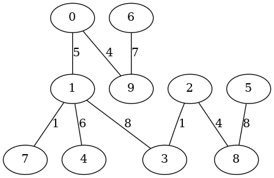

Guile基礎／木のランダム生成
概 要
-
プログラミング学習の題材として，グラフのアルゴリズムを実装してみようと思います．
おもな目的はベクタやレコードに少しでも馴染むことです．
このノートは無向木や根付き有向木を一様ランダム（uniformly at random）に生成するアルゴリズムを実装してみます．そのアルゴリズムは意外に単純です．
-
このノートで示すプログラムは
gentree.scm
にあります．
-
筆者は Debian 11(bullseye) を使っていて，Guile は Debian 11 が配布するパッケージを使っています．そのバージョンは 3.0.5 です．
ちなみに，2022.3.1時点の最新版は 3.0.8 です．
準 備
以下では，グラフに関して次のような用語や記法を使用します．
-
任意のグラフを $G = (V,E)$ で表します．少し正確に言うと，
$G=(V,E)$ が無向グラフであるとは，$V$が適当な空でない有限集合で，
$E$が集合$\{\{u,v\} \mid u\not=v$ かつ $u,v \in V\}$の部分集合のときを言います．
ここで，2要素集合 $\{u,v\}$ は2つの頂点$u$と$v$を結ぶ無向辺を表しています．
さらに，$G=(V,E)$が有向グラフであるとは，
$V$が適当な空でない有限集合で，$E$が集合$\{(u,v) \in V \times V \mid u\not=v \}$の部分集合のときを言います．ここで，順序対 $(u,v)$ は頂点$u$から頂点$v$へ向かう有向辺を表しています．無向／有向に限らず，このノートでは自己ループを持つグラフは扱いません．
-
頂点集合は何でもかまわないので，このノートでは，
$n$個の頂点からなるグラフの頂点集合を $V = \{0,1, ..., n-1\}$ とします．
つまり，頂点を $0 \sim n-1$ の番号によって表します．
-
2つのグラフ $G_1=(V_1,E_1)$ と $G_2=(V_2,E_2)$ が等しいとは，
$V_1=V_2$ かつ $E_1=E_2$ のときを言います．
言い換えると，$G_1$と$G_2$が同型であったとしても頂点番号の付き方が異なるときには，
$G_1$と$G_2$は異なるグラフとします．例えば，$V_1=V_2=\{0,1,2\}$で，
$E_1=\{\{0,1\},\{1,2\}\}$，$E_2=\{\{0,1\},\{0,2\}\}$ のとき，$G_1$と$G_2$は同型ですが，$E_1\not=E_2$なので異なるグラフです．
-
有向グラフ $T=(V,E)$ が根付き有向木であるとは，$E$の各有向辺を無向辺に変更して得られる無向グラフが無向木（連結かつ無閉路的な無向グラフ）であり，なおかつ，ある頂点$r\in V$が存在して，次のa.かb.のいずれかが成り立つときを言います．
- すべての頂点$v \in V-\{r\}$ に対して，$r$から$v$への有向道が存在する．
- すべての頂点$v \in V-\{r\}$ に対して，$v$から$r$への有向道が存在する．
この条件を満たす頂点$r \in V$が存在するとき，それは一意的です（2つ存在した場合，
どこかで閉路ができるので）．そこで，この$r$を$T$の根と呼びます．
$T$がいずれか一方の条件を満たせば，
有向辺の向きを逆転させることによって他方を満たすようにできます．
つまり，条件a.かb.のどちらを満たすかはどうでもよいことだと言えます．
そこで，このノートでは，根付き有向木はa.を満たすものとします．
-
グラフ $T=(V_T,E_T)$ が連結無向グラフ$G=(V,E)$の全域木であるとは，$T$は無向木であり，$V_T=V$ かつ $E_T \subseteq E$ となるときを言います．さらに，根付き有向木 $T=(V_T,E_T)$ が連結無向グラフ$G=(V,E)$の全域木（根付き有向全域木）であるとは，$E_T$に属する有向辺を無向辺に変更して得られる無向木が$G$の全域木であるときを言います．
-
このノートは，
グラフアルゴリズムの基礎
で述べたグラフのデータ構造（ベクタとリストを用いた隣接リスト構造）を前提にしています．
グラフ上のランダムウォーク
Adlous[Ald90,Propsition 1]
と
Broder[Bro89,Corollary 4]
は，（それぞれ独立に）連結無向グラフ上のランダムウォークによって，
そのグラフの全域木を一様ランダムに生成できることを示しています．
この結果を完全グラフに適用することによって，
無向木や根付き有向木を一様ランダムに生成することができます．
以下では，まずAdlousやBroderが示したアルゴリズムを示します．
続いて，そのアルゴリズムを完全グラフに適用した場合の帰結を述べます．
アルゴリズム
下記のアルゴリズムの中で使用する各種記号は次のような意味を持ちます．
- root はランダムウォークの出発頂点を表します．
根付き有向木を生成する場合には，有向木の根になります．
- get-neighbor$(x)$ は頂点 $x$ の隣接頂点の中から一様ランダムに頂点を選ぶ手続きを表します．
- visited は，アルゴリズム実行途中の各時点でそれまでに生成された頂点の集合を表します．これは，ランダムに生成した頂点が初出か既出かを判定するために使用します．
- $k$ は visited の要素数を表します．
-
$u$ はランダムウォークの現在頂点を表し，
$v$ は次に進むべき頂点を表します．
ランダムウォークは，初出／既出に関わりなく，常に先の頂点へ進んでいきます．
アルゴリズム RWalk($G$,root)
| 入力： |
連結無向グラフ $G=(V,E)$と適当な頂点 root $\in{}V$．
ただし，$V=\{0,1,...,n-1\}$（$n \geq 1$）．
|
| 出力： |
rootを根とする$G$の根付き有向全域木 $T=(V,E_T)$
|
- visited $\leftarrow \{$root$\}$; $E_T \leftarrow \emptyset$;
- $k \leftarrow 1$; $u \leftarrow$ root; $v \leftarrow$ get-neighbor$($root$)$
- $k < n$ の間，次の計算を繰り返す．
- $v \not\in\,$visited の場合，有向辺 $(u,v)$ を $E_T$ に追加し，
$v$ を visited に追加し，$k$ をインクリメントする．
一方，$v \in\,$visited の場合には何もしない．
- $u \leftarrow v$; $v \leftarrow$ get-neighbor$(v)$
-
$T=(V,E_T)$とrootを計算結果として出力する．
このアルゴリズムに対して，
Adlous[Ald90,Propsition 1]
と
Broder[Bro89,Corollary 4]
は（それぞれ独立に）次の結果を示しています．
任意の連結無向グラフ$G=(V,E)$と頂点root$\in V$に対して：
-
RWalk($G$,root) は，rootを根とする$G$の根付き有向全域木を一様ランダム（uniformly at random）に生成する．
-
RWalk($G$,root) における有向辺 $(u,v)$ を無向辺 $\{u,v\}$ に置き換えたものは，
$G$の全域木を一様ランダムに生成する．（これは，rootを根とする$G$の根付き有向全域木の全体と，$G$の全域木の全体が1対1に対応することから直ちに得られます．）
この結果から次が成り立ちます．$G=(V,E)$を$n$頂点の完全グラフとしたとき：
-
RWalk($G$,root)は，rootを根とする$n$頂点の根付き有向木を一様ランダムに生成する．
さらに，rootを$V$から一様ランダムに選んだとき，$n$頂点の根付き有向木を一様ランダムに生成する．
-
RWalk($G$,root) における有向辺 $(u,v)$ を無向辺 $\{u,v\}$ に置き換えたものは，$n$頂点の無向木を一様ランダムに生成する．また，rootを$V$から一様ランダムに選んだとしても$n$頂点の無向木を一様ランダムに生成する．
実装
下記の手続きは，$G$が完全グラフの場合のRWalk($G$,root)に沿って，
無向木や根付き有向木を一様ランダムに生成します．
ただし，Guile の random 関数が一様ランダムな乱数を生成することを（当然）仮定しています．幾つか補足します．
-
下記のプログラムは，
グラフアルゴリズムの基礎
で述べたグラフのデータ構造（ベクタとリストを用いた隣接リスト構造）を定義したモジュール
(adjlist)
を前提にしています．
-
下記の手続きはデフォルトでは無向木を生成します．
キーワード引数の directed に #t を指定すると根付き有向木を生成します．
さらに，そのときの有向辺は根から遠ざかる向きに設定するのですが，
reverse に #t を指定すると根に近づく向きに設定します．
無向木を生成する場合には reverse は無視します．
-
キーワード引数の weight-interval は辺に重みを付けるときに，
重みの下限 $lb$ と上限 $ub$ のペア ($lb$ . $ub$) を指定します．
これを指定すると，$lb$以上$ub$未満の整数値を各辺にランダムに割り当てます．
-
RWalk($G$,root)の中で示した visited はビットベクタによって実装しています．
-
下記の add-edge-proc は，キーワード引数によって指定された辺に関する仕様（有向／無向，辺重みあり／なし）を満たす辺追加手続きを生成して返します．従って，
キーワード引数によって指定された辺に関する仕様は add-edge 手続きに（内部に）集約しています．
add-edg-proc は
(adjlist)
モジュールの中で実装しています．
-
下記の実装は完全グラフ上のランダムウォークを行っているので，get-neighbor 手続きは，引数として与えられた頂点以外を一様ランダムに生成しています．
;; gentree.scm
(define* (random-walk-tree num-of-nodes
#:key
(directed #f)
(reverse #f)
(weight-interval #f))
(define num-of-edges (1- num-of-nodes))
(define root (random num-of-nodes))
(define adj (make-vector num-of-nodes '()))
(define visited (make-bitvector num-of-nodes #f))
(bitvector-set-bit! visited root)
(define add-edge (add-edge-proc directed reverse weight-interval))
(define num-of-nodes-1 (1- num-of-nodes))
(define-syntax-rule (get-neighbor u)
(let ((v (random num-of-nodes-1))) (if (< v u) v (1+ v))))
(let random-walk ((k 1)
(u root)
(v (get-neighbor root)))
(when (< k num-of-nodes)
(if (bitvector-bit-clear? visited v)
(begin
(bitvector-set-bit! visited v)
(add-edge adj u v)
(random-walk (1+ k) v (get-neighbor v)))
(random-walk k v (get-neighbor v)))))
(make-graph num-of-nodes
num-of-edges
(if directed 'directed 'undirected)
root
adj))
以下の実行例は辺重み付き無向木を生成しています．
右側の図は make-graphviz によって生成したものです．
$ guile -l adjlist.scm -l gentree.scm
...... コンパイルメッセージ＆起動メッセージ ......
guile> (use-modules (adjlist) (gentree))
guile> (define T (random-walk-tree 10 #:weight-interval '(1 . 10)))
guile> (show-graph T)
The # of nodes:10
The # of edges:9
graph type:undirected
The root:5
adj[0] -- ((4 . 4))
adj[1] -- ((2 . 4))
adj[2] -- ((1 . 4) (7 . 8))
adj[3] -- ((8 . 1))
adj[4] -- ((0 . 4) (7 . 8))
adj[5] -- ((6 . 8) (7 . 4))
adj[6] -- ((8 . 9) (5 . 8))
adj[7] -- ((2 . 8) (4 . 8) (5 . 4))
adj[8] -- ((3 . 1) (9 . 9) (6 . 9))
adj[9] -- ((8 . 9))
guile> (make-graphviz T "tree1")
$1 = 0
|
|
|
以下の実行例は辺に重みのない根付き有向木を生成しています．
有向辺は根に近づく方向に向けています．
guile> (define T (random-walk-tree 10 #:directed #t #:reverse #t))
guile> (show-graph T)
The # of nodes:10
The # of edges:9
graph type:directed
The root:2
adj[0] -> ((7 . #f))
adj[1] -> ((8 . #f))
adj[2] -> ()
adj[3] -> ((4 . #f))
adj[4] -> ((2 . #f))
adj[5] -> ((6 . #f))
adj[6] -> ((4 . #f))
adj[7] -> ((2 . #f))
adj[8] -> ((0 . #f))
adj[9] -> ((0 . #f))
guile> (make-graphviz T "tree2")
$2 = 0
|
|

|
完全グラフ上のランダムウォークの平均時間量
RWalk($G$,root)を$n$頂点の完全グラフに適用した場合の時間量について考えていきます．
そのために，次を仮定します．
-
RWalk($G$,root)の1.〜2.は定数時間または$O(n)$時間で実行できる．
-
RWalk($G$,root)の3.a.や3.b.（の1回分）は定数時間で実行できる．
実際，先に示したプログラムはこの仮定を満たしています．
この仮定のもとで，RWalk($G$,root)の時間量は3.の繰り返し回数に比例します．
そのため，以下では3.の繰り返し回数を分析します．
ランダムウォークの cover time
RWalk($G$,root)の3.の繰り返し回数は，
全頂点を生成するまでの get-neighbor 手続きの実行回数に一致します．
その実行回数のことをランダムウォークの cover time と呼びます．
以下では，$n$頂点の完全グラフに対する cover time を $C_n$ とおいて，
$C_n$の大きさを評価します．
$n$頂点完全グラフの上のランダムウォークは（ランダムな）頂点列なので，$C_n$ は次の条件を満たす頂点列 $\alpha$ $=$ $v_0, v_1, ..., v_{\ell}$ における移動回数 $\ell$ のことです．
- $\alpha$ は$n$個の頂点をすべて含み，かつ，
$v_{\ell}$ は $\alpha$ の中で初めて現れた頂点である．
そこで，
この条件を満たすすべての頂点列からなる集合を $\Omega_n$ で表すことにします．
このとき，$C_n$は$\Omega_n$を標本空間とし非負整数全体を値域とする確率変数になります．
そこで，頂点列$\alpha\in \Omega_n$に対する$C_n$の値を（必要に応じて） $C_n(\alpha)$ で表し，$C_n$ の値が $\ell$ となる確率を $Pr(C_n=\ell)$ で表すことにします．
自明なこととして，$C_n \geq n-1$ なので，任意の$\ell \lt n-1$に対して $Pr(C_n=\ell)=0$ です．
cover time に馴染む
筆者は確率論にとても疎いので，$C_n$に馴染むために簡単な演習をしてみようと思います．
具体的には，とりあえず $C_3$ の大きさを評価してみます．
まず，$Pr(C_3=2)$ を求めてみたいと思います．
$C_3(\alpha)=2$を満たす頂点列 $\alpha\in\Omega_3$ は次の6つです．
012，021，102，120，201，210
ここで，012 は 0,1,2 という頂点列を略記しています（他も同様）．
それぞれの頂点列が生起する確率は，1/12 です．
なぜなら，先頭の頂点が生起する確率は 1/3 で，後続の頂点が生起する確率は（それぞれ） 1/2 だからです．以上から，$Pr(C_3=2)=1/2$ となります．
もう１つ $Pr(C_3=3)$ を求めてみたいと思います．
まず，先頭の頂点を0に固定した頂点列だけを分析すれば十分であることを注意します．
言い換えると，$Pr(C_3=3|v_0=0)$ といった条件付き確率を計算すれば十分です．
なぜなら，任意の頂点 $v \in V=\{0,1,2\}$ に対して，
先頭の頂点が$v$の頂点列全体は，先頭の頂点が0の頂点列全体と構造的に同型だからです．
このことから，任意の頂点$v \in V$に対して
$Pr(C_3=3|v_0=0) = Pr(C_3=3|v_0=v)$
が成り立ち，
\(
\begin{array}{lcl}
Pr(C_3=3)
&=& \sum_{v=0}^{2}Pr(C_3=3,v_0=v) \\
&=& \sum_{v=0}^{2}Pr(C_3=3|v_0=v) \cdot Pr(v_0=v) \\
&=& \sum_{v=0}^{2}Pr(C_3=3|v_0=0) \cdot (1/3) \\
&=& 3 \cdot Pr(C_3=3|v_0=0) \cdot (1/3) \\
&=& Pr(C_3=3|v_0=0) \\
\end{array}
\)
となるからです．ここで，$Pr(C_3=3,v_0=v)$ は $C_3=3$ と $v_0=v$ の同時確率を表しています．
さてそこで，先頭が0で$C_3(\alpha)=3$となる頂点列 $\alpha\in\Omega_3$ は
0102， 0201
の2つです．それぞれが生起する条件付き確率（先頭が0であることを条件とする生起確率）は 1/8 なので，
$Pr(C_n=3) = Pr(C_n=3|v_0=0) = 1/8+1/8 = 1/4$
となります．
以上のような考察をしていくと，任意の $\ell \geq 2$ に対して，
$Pr(C_3=\ell) = Pr(C_3=\ell|v_0=0)$
が成り立つことが分かります．
さらに，先頭が0で $C_3(\alpha)=\ell$ を満たす頂点列 $\alpha\in\Omega_3$ は
- 0と1が交互に生起して，最後に2が生起する頂点列と
- 0と2が交互に生起して，最後に1が生起する頂点列
の2つであることが分かります．さらに，それぞれが生起する条件付き確率は $(1/2)^{\ell}$ です．従って，
$Pr(C_3=\ell) = Pr(C_3=\ell|v_0=0) = 2\cdot(1/2)^{\ell} = (1/2)^{\ell-1}$
が成り立つことが分かります．
以上の考察をもとに，$C_3$ の期待値 $E(C_3)$ を求めてみます．その期待値は
\(
E(C_3)
= \sum_{\ell \geq 2} \ell\cdot{}Pr(C_3=\ell)
= \sum_{\ell \geq 2} \ell\cdot(1/2)^{\ell-1}
= 3
\)
となります．これで簡単な訓練は終わりにします．
$C_n$に関して，だいぶイメージが出来ました．
時間量の解析
これ以後の目標は，$C_n$の期待値 $E(C_n)$ の上界を求めることです．
結論を先に言うと，$E(C_n)$ は $O(n\log(n))$ になります．
それを求めるために少し準備します．
頂点列 $\alpha = v_0, v_1, ..., v_{\ell} \in \Omega_n$ と整数$k$（$1 \leq k \leq n-1$）に対して，$k$個目の頂点が現れてから$k+1$個目の頂点が現れるまでの移動回数を
$D_n^k(\alpha)$ で表すことにします．もっと正確に定義すると次のようになります．
$\alpha$と整数$i$（$0 \leq i \leq \ell$）に対して，$v_0, ..., v_i$ に含まれる頂点の集合を $I(\alpha,i)$ で表し，その要素数を $\#I(\alpha,i)$ で表すことにします．
例えば，
$v_0=3, v_1=2, v_2=3, v_3=0, v_4=2, v_5=0, v_6=7, v_7=4, ...$
だったとき，
$I(\alpha,0)=\{3\}$，
$I(\alpha,1)=\{2,3\}$，
$I(\alpha,2)=\{2,3\}$，
$I(\alpha,3)=\{0,2,3\}$，
$I(\alpha,4)=\{0,2,3\}$，
$I(\alpha,5)=\{0,2,3\}$，
$I(\alpha,6)=\{0,2,3,7\}$，
$I(\alpha,7)=\{0,2,3,4,7\}$，...
などとなります．$\#I(\alpha,i)$を使うと，$D_n^k(\alpha)$ は次のように定義できます．
\(
D_n^k(\alpha) = \min\{ i \mid \#I(\alpha,i)=k+1\}
- \min\{ i \mid \#I(\alpha,i)=k\}
\)
例えば，上で示した頂点列について言うと，
\(
\begin{array}{lclclcl}
D_n^1(\alpha)
&=& \min\{ i \mid \#I(\alpha,i)=2\} - \min\{ i \mid \#I(\alpha,i)=1\}
&=& 1 - 0 &=& 1 \\
D_n^2(\alpha)
&=& \min\{ i \mid \#I(\alpha,i)=3\} - \min\{ i \mid \#I(\alpha,i)=2\}
&=& 3 - 1 &=& 2 \\
D_n^3(\alpha)
&=& \min\{ i \mid \#I(\alpha,i)=4\} - \min\{ i \mid \#I(\alpha,i)=3\}
&=& 6 - 3 &=& 3 \\
D_n^4(\alpha)
&=& \min\{ i \mid \#I(\alpha,i)=5\} - \min\{ i \mid \#I(\alpha,i)=4\}
&=& 7 - 6 &=& 1 \\
\end{array}
\)
などとなります．
この $D_n^k(\alpha)$ は，$C_n$ と同様に，$\Omega_n$ を標本空間として非負整数全体を値域とする確率変数になります．
以上のように定めた $C_n$ と $D_n^k$ と任意の $\alpha \in \Omega_n$ に対して，
次が成り立つます．
\(
C_n(\alpha) = D_n^1(\alpha) + D_n^2(\alpha) + \cdots + D_n^{n-1}(\alpha)
\)
この等式はそれぞれの定義から自明です．
確率論では，これを次のように略記するようです．
\(
C_n = D_n^1 + D_n^2 + \cdots + D_n^{n-1}
\)
この等式を用いて $C_n$ の期待値 $E(C_n)$ の上界を求めます．
まず，期待値の線型性から次が成り立ちます．
\(
E(C_n) = E(D_n^1) + E(D_n^2) + \cdots + E(D_n^{n-1})
\)
そこで，$E(D_n^k)$ を求めます．$k$個目の頂点が現れてから$k+1$個目の頂点が現れるまでの頂点列は，
\(
p_n^k = (n-k)/(n-1)
\)
を成功確率とするベルヌーイ試行列になっていて，$D_n^k=m$（$m \geq 1$）となる確率は
\(
Pr(D_n^k=m) = (1-p_n^k)^{m-1}p_n^k
\)
となります．
この確率分布は（成功するまでの試行回数に関する）幾何分布になっています．
つまり，$D_n^k$ は幾何分布に従っていて，その期待値は次のようになります．
$E(D_n^k) = 1/p_n^k = (n-1)/(n-k)$
従って，$E(C_n)$ は次のように計算できます．
\(
\begin{array}{lcl}
E(C_n) &=& E(D_n^1) + E(D_n^2) + \cdots + E(D_n^{n-1}) \\
&=& \sum_{k=1}^{n-1} (n-1)/(n-k)
~=~ (n-1)\cdot\sum_{k=1}^{n-1}1/k
~=~ O(n\log(n))
\end{array}
\)
まとめ
以上から，RWalk($G$,root)の3.の繰り返し回数は $O(n\log(n))$ 回になります．
従って，1.〜2.が定数時間または$O(n)$時間で実行できて，3.a.や3.b.が定数時間で実行できると仮定すると，RWalk($G$,root)の平均の時間量は $O(n\log(n))$ になります．
Adlousのアルゴリズム
アルゴリズム
Adlous[Ald90] は，
次のような線形時間のアルゴリズムが無向木を一様ランダムに生成することを示しています．
アルゴリズム Aldous($n$)
| 入力： |
頂点数$n$．
|
| 出力： |
無向木$T=(V,E_T)$ |
| 備考： |
以下，$V=\{0,1,...,n-1\}$とします．
さらに，下記の random($n$) は，$0$以上$n$未満の整数を一様ランダムに生成する手続きを表します．
|
- $E_T \leftarrow \emptyset$
- $\pi$ $\leftarrow$ $V$上の置換を一様ランダムに選ぶ．
- $v=1,2, \ldots ,n-1$ に対して：
- $u \leftarrow \min\{v-1,$random$(n)\}$
- 辺$\{\pi(u),\pi(v)\}$ を $E_T$ に追加する．
-
無向木 $T=(V,E_T)$ を計算結果として出力します．
無向辺の追加を有向辺の追加に変更して $\pi(0)$ を根として出力すれば，根付き有向木を一様ランダムに生成することになります．
実装
下記の手続きは，ランダムウォークの場合と同様に，
キーワード引数を設定すれば，根付き有向木を生成したり，
辺に重みを付けることができるように作っています．
下記の perm は，$V=\{0,1, ..., n-1\}$上の置換$\pi$を一様ランダムに生成します．
(define* (random-Adlous-tree num-of-nodes
#:key
(directed #f)
(reverse #f)
(weight-interval #f))
(define num-of-edges (- num-of-nodes 1))
(define adj (make-vector num-of-nodes '()))
(define add-edge (add-edge-proc directed reverse weight-interval))
(define perm
(let ((vec (vector-unfold (lambda (v) v) num-of-nodes)))
(let loop ((v (- num-of-nodes 1)))
(when (> v 0)
(vector-swap! vec v (random (+ v 1)))
(loop (1- v))))
vec))
(define-syntax rename-node
(syntax-rules ()
((_ x) (vector-ref perm x))))
(let loop ((v 1))
(when (< v num-of-nodes)
(add-edge adj
(rename-node (min (- v 1) (random num-of-nodes)))
(rename-node v)
)
(loop (1+ v))))
(define root (rename-node 0))
(make-graph num-of-nodes
num-of-edges
(if directed 'directed 'undirected)
root
adj))
以下の実行例は，1以上10未満の辺重みの付いた10頂点の無向木を生成しています．
$ guile -l adjlist.scm -l gentree.scm
...... 起動メッセージ ......
guile> (use-modules (adjlist) (gentree))
guile> (define T (random-Adlous-tree 10 #:weight-interval '(1 . 10)))
guile> (show-graph T)
The # of nodes:10
The # of edges:9
graph type:undirected
The root:6
adj[0] -- ((9 . 8))
adj[1] -- ((3 . 9))
adj[2] -- ((4 . 1))
adj[3] -- ((1 . 9) (7 . 8) (4 . 7) (6 . 8))
adj[4] -- ((5 . 6) (2 . 1) (3 . 7))
adj[5] -- ((4 . 6))
adj[6] -- ((8 . 9) (3 . 8))
adj[7] -- ((3 . 8))
adj[8] -- ((9 . 6) (6 . 9))
adj[9] -- ((0 . 8) (8 . 6))
guile> (make-graphviz T "Adlous-tree1")
$1 = 0
|
|
以下の実行例は，10頂点の根付き有向木を生成しています．各有向辺は根から遠ざかる方向に向けています．
$ guile -l adjlist.scm -l gentree.scm
...... 起動メッセージ ......
guile> (use-modules (adjlist) (gentree))
guile> (define T (random-Adlous-tree 10 #:directed #t))
guile> (show-graph T)
The # of nodes:10
The # of edges:9
graph type:directed
The root:9
adj[0] -> ()
adj[1] -> ()
adj[2] -> ((0 . #f))
adj[3] -> ((5 . #f))
adj[4] -> ()
adj[5] -> ((4 . #f) (1 . #f))
adj[6] -> ((2 . #f) (3 . #f))
adj[7] -> ((8 . #f))
adj[8] -> ()
adj[9] -> ((7 . #f) (6 . #f))
guile> (make-graphviz T "Adlous-tree2")
$1 = 0
|
|
Wilsonのアルゴリズム
アルゴリズム
以下の next は，ランダムウォーク（各頂点からどの頂点に進んだか）を記録するためのベクタです．visited は，アルゴリズム実行途中の各時点で全域木に含めることが決定した頂点からなる集合です．
アルゴリズム Wilson($G$,root)
| 入力： |
連結無向グラフ $G=(V,E)$と適当な頂点 root $\in{}V$．
ただし，$V=\{0,1,...,n-1\}$（$n \geq 1$）．
|
| 出力： |
rootを根とする$G$の根付き有向全域木 $T=(V,E_T)$
|
- visited $\leftarrow \{$root$\}$
- 各$u \in V$に対して next[$u$] $\leftarrow$ #f;
- $i=0,1, ..., n-1$ に対して次の計算を繰り返す．
- $u \leftarrow i$
- while $u \not\in$ visited:
- next[$u$] $\leftarrow$ get-neighbor($u$); $u \leftarrow$ next[$u$]
- $u \leftarrow i$
- while $u \not\in$ visited:
- visitedに$u$を追加; $u \leftarrow$ next[$u$]
-
$E_T \leftarrow \{($next[$u$]$,u) \mid u\not=$root$, u \in V\}$
-
$T=(V,E_T)$とrootを計算結果として出力する．
3.b.のwhileループは，頂点$i$からランダムウォークを始めて，それまでに構築している木（の一部）に到達するまでランダムウォークを続けます．このランダムウォークは，1つの頂点（木にはまだ含まれていない頂点）を2度以上訪れるかも知れません．そういった頂点$v$があったとき，$v$から始めて$v$に戻ってくるまでのウォーク（閉路）はランダムウォークの記録から除外してしまいます．そのため，3.b.のwhileループが行っているランダムウォークは「loop erasing walk」と呼ばれたりしています．
3.b.のランダムウォークがそれまでに構築されている木（の一部）に到達したら，3.d.のwhileループに移ります．3.d.のwhileループは，3.b.の「loop erasing walk」が辿った辺と頂点を木の一部に加えています．辺集合$E_T$を直接操作していないので分かりにくいと思いますが，3.b.のwhileループにおいて，visitedに加えられた頂点（木に加えられた頂点）からランダムウォークが進むことは決してないので，木に加えられた辺は暗黙的にnextベクタに温存されます．
3.のループが終了したら，nextベクタに温存されている木の辺を収集して，
全域木として出力します．
このアルゴリズムに対して，
Wilson[Wil96,Theorem 1]
は次の結果を示しています．
任意の連結無向グラフ$G=(V,E)$と頂点root$\in V$に対して：
-
Wilson($G$,root) は，rootを根とする$G$の根付き有向全域木を一様ランダム（uniformly at random）に生成する．
この結果から次が成り立ちます．$G=(V,E)$を$n$頂点の完全グラフとしたとき：
-
RWalk($G$,root)は，rootを根とする$n$頂点の根付き有向木を一様ランダムに生成する．
さらに，rootを$V$から一様ランダムに選んだとき，$n$頂点の根付き有向木を一様ランダムに生成する．
-
RWalk($G$,root) における有向辺 $(u,v)$ を無向辺 $\{u,v\}$ に置き換えたものは，$n$頂点の無向木を一様ランダムに生成する．また，rootを$V$から一様ランダムに選んだとしても$n$頂点の無向木を一様ランダムに生成する．
時間量
Wilson[Wil96,Theorem 2]
は，Wilson($G$,root)におけるランダムウォークの平均移動回数（ge-neighborの実行回数）が平均到達時間（mean hitting time；頂点$u$から頂点$v$に到達するまでの移動回数の平均値）の2倍以下であることを示しています．平均到達時間は明らかに平均cover time以下なので，Wilsonのアルゴリズムの平均の時間量は平均cover timeのオーダーであることが分かります．従って，Wilson($G$,root)の平均時間量のオーダーはRWalk($G$,root)と同じです．
しかしながら，後述する実験で示すように，Wilson($G$,root)はRWalk($G$,root)に比べてかなり少ない時間（移動回数）で終了します．
このことは，だいぶ大雑把な話ではあるものの，次のような直観によって説明できます．
いま，あるグラフの9割の頂点が木に含めることができて（つまり，visitedに登録できて），残りの1割の頂点を木に含めようとしている状況を考えます．RWalkの場合，9割の頂点の中をグルグルとさまよってしまって残り1割の頂点になかなか到達できないかも知れません．
一方，Wilsonの場合は，未到達の頂点からランダムウォークを始めて，
すでに木に含まれている9割の頂点にすぐに到達するかも知れません．
言い方を変えると，RWalkは新たな頂点をより多く見つけた状況では，ランダムウォークは多くの移動回数を要するかもしれないのに対して，Wilsonは新たな頂点を見つけるほどより少ない移動回数ですむと考えられます．この話のように，ランダムウォークを無理に継続せずに，未到達の頂点から再開するところがWilsonのアルゴリズムの特徴でありメリットであるように思います．
実装
下記の手続きは，上で述べたアルゴリズムの部分（下記のloop）以外はrandom-walk-treeとほぼ同じです．下記の1番目のloopは，Wilson($G$,root)の3.の処理を行っていて，2番目のloopは4.の処理を行っています．
(define* (random-Wilson-tree num-of-nodes
#:key
(directed #f)
(reverse #f)
(weight-interval #f))
(define ntimes 0)
(define num-of-edges (- num-of-nodes 1))
(define root (random num-of-nodes))
(define adj (make-vector num-of-nodes '()))
(define add-edge (add-edge-proc directed reverse weight-interval))
(define num-of-nodes-1 (1- num-of-nodes))
(define-syntax-rule (get-neighbor u)
(let ((v (random num-of-nodes-1)))
(if (< v u) v (1+ v))))
(define visited (make-bitvector num-of-nodes #f))
(bitvector-set-bit! visited root)
(define next (make-vector num-of-nodes #f))
(let loop ((i 0))
(when (< i num-of-nodes)
(let walk-loop ((u i))
(when (bitvector-bit-clear? visited u)
(let ((v (get-neighbor u)))
(vector-set! next u v)
(walk-loop v))))
(let edge-loop ((u i))
(when (bitvector-bit-clear? visited u)
(bitvector-set-bit! visited u)
(edge-loop (vector-ref next u))))
(loop (1+ i))
))
(let loop ((u 0))
(when (< u num-of-nodes)
(and=> (vector-ref next u)
(lambda (v) (add-edge adj v u)))
(loop (1+ u))))
(make-graph num-of-nodes
num-of-edges
(if directed 'directed 'undirected)
root
adj))
以下の実行例は，10頂点の根付き有向木を生成しています．各有向辺は根から遠ざかる方向に向けています．
$ guile -l adjlist.scm -l gentree.scm
...... 起動メッセージ ......
guile> (use-modules (adjlist) (gentree))
guile> (define T (random-Wilson-tree 10 #:weight-interval '(1 . 10)))
guile> (show-graph T)
The # of nodes:10
The # of edges:9
graph type:undirected
The root:8
adj[0] -- ((9 . 4) (1 . 5))
adj[1] -- ((7 . 1) (4 . 6) (3 . 8) (0 . 5))
adj[2] -- ((3 . 1) (8 . 4))
adj[3] -- ((2 . 1) (1 . 8))
adj[4] -- ((1 . 6))
adj[5] -- ((8 . 8))
adj[6] -- ((9 . 7))
adj[7] -- ((1 . 1))
adj[8] -- ((5 . 8) (2 . 4))
adj[9] -- ((0 . 4) (6 . 7))
guile> (make-graphviz T "Wilson-tree1")
$1 = 0
|

|
以下の実行例は，10頂点の根付き有向木を生成しています．各有向辺は根から遠ざかる方向に向けています．
$ guile -l adjlist.scm -l gentree.scm
...... 起動メッセージ ......
guile> (use-modules (adjlist) (gentree))
guile> (define T (random-Wilson-tree 10 #:directed #t))
guile> (show-graph T)
The # of nodes:10
The # of edges:9
graph type:directed
The root:3
adj[0] -> ()
adj[1] -> ()
adj[2] -> ((5 . #f) (4 . #f))
adj[3] -> ((9 . #f) (2 . #f) (1 . #f))
adj[4] -> ((8 . #f))
adj[5] -> ((0 . #f))
adj[6] -> ()
adj[7] -> ()
adj[8] -> ((7 . #f))
adj[9] -> ((6 . #f))
guile> (make-graphviz T "Wilson-tree2")
$1 = 0
|
|
実験
このノートで示した3つのアルゴリズム（の実装）に関して，
計算時間やランダムウォークの移動回数（get-neighborの実行回数）を計測してみます．
計算時間
まず，3つのアルゴリズムの計算時間を比較します．
実験環境は次の通りです．
| CPU |
Intel(R) Core(TM) i3-9100 CPU @ 3.60GHz
|
| メモリ |
8GB |
| OS |
Debian 11.3 5.10.0-13-amd64 |
| 処理系 |
Guile 3.0.5 |
計算時間は次のように計測します．
以上の計測結果は次のようになります．
それぞれの曲線は gnuplot のフィッティング機能（非線形の最小二乗法）を用いて計測結果にフィットさせたものです．random-walk と Wilson は $a\cdot{}n\log{n}+b$ といった曲線を示していて，係数$a$の誤差は2％程度になっています．Adlousは $a\cdot{}n+b$ という直線を示していて，係数$a$の誤差は1％程度になっています．
GCの気まぐれ
上記の計算時間にはGCの実行時間も（たぶん）含まれています．
そのため，上記の結果は，各アルゴリズムの相対的な比較としては有効だと思いますが，
アルゴリズムそのものの時間量（オーダー）の分析としては目安に過ぎません．
一般に，GCの挙動を制御できない限り，GCを使用する処理系ではアルゴリズムそのものの時間量（オーダー）の実験的な分析はできないと思います．
上記の結果は，何回も計測した結果の中から「きれい」な結果を選んだものです．実際には，下図に示すように，GCの気まぐれな動作のために計算時間は大きく変動してしまいます．下図は，それぞれの手続きに関して，20万頂点から始めて400万頂点まで，20万頂点ごとに実行時間とGCの時間を計測した結果を示しています．それらの計測にはGuileの (statprof) モジュールが提供する statprof 手続きを使用しています．
プロファイルを採る前にGCを明示的に実行したり，
GCが動作しないと思われるループ部分だけのプロファイルも採ってみたりしたのですが，それでもなおGCが気まぐれな挙動をしてしまうため，アルゴリズム部分の計算時間だけを採取することはあきらめました．
それから，
Guile[7.20 Statprof]によれば，GCが複数のコアを使った場合，GCの実行時間が全体の実行時間を超えることもあり得るとのことです．だったら『「Total time」って何を示しているの？』と訊きたくなりますが，そういうことがあるそうです．
上のグラフを見るとそのようには感じませんが，それが真実ならば，
全体の時間とGCの時間の差分を採っても参考にはならないことになります．
移動回数
random walkとWilsonのアルゴリズムについて，
移動回数（get-neighborの実行回数）も計測してみました．
これは，1万頂点から始めて100万頂点まで1万頂点ごとに移動回数を計測するサンクを作って，そのサンクを5回実行して平均値を求めています．その結果は次の通りです．
それぞれの曲線は $a\cdot{}n\log{n}+b$ の曲線を示していて，random walk の場合は $a \approx 1.04$（誤差は約0.7％），Wilsonの場合は $a \approx 0.15$（誤差は約4％）となっています．この結果から，Wilson の移動回数は random walk の移動回数の約1/7になっていると言えます．Wilsonの論文のタイトルに「more quickly than the cover time」とありますが，その通りの結果が出ていて，看板に偽りはないようです．
おわりに
今回のプログラミングを通して，レコードやベクタの基本的な使い方は理解できました．
実は，レコード型は面倒くさそうだといった（食わず嫌いの）印象を持っていたのですが，
SRFI-9のレコード型はシンプルで扱いやすいことが分かりました．
それから，ランダムウォークは理論的にも実験的にも面白い題材だと思います．
参考文献
このノートでは，次の3つの文献を参考にしています．
| [Ald90] |
David J. Aldous:
The random walk construction of uniform spanning trees and uniform
labelled trees, SIAM Journal on Discrete Mathematics, Vol.3, Issue 4,
November 1990, pp.450-465.
|
| [Bro89] |
Andrei Broder:
Generating random spanning trees,
Proceedings of the 30th Annual Symposium
on Foundations of Computer Science, October 1989, pp.442-447.
|
| [Wil96] |
David Bruce Wilson:
Generating Random Spanning Trees More Quickly than the Cover Time,
Proceedings of the twenty-eighth annual ACM symposium on Theory of Computing,
May 1996, pp.296-303.
|
これらの内容を詳しく読み解く力量は残念ながら筆者にはありませんが，
アルゴリズムの記述と定理の文面くらいは理解できるので，
このノートはその程度の理解に基づいて作っています．
(おしまい)